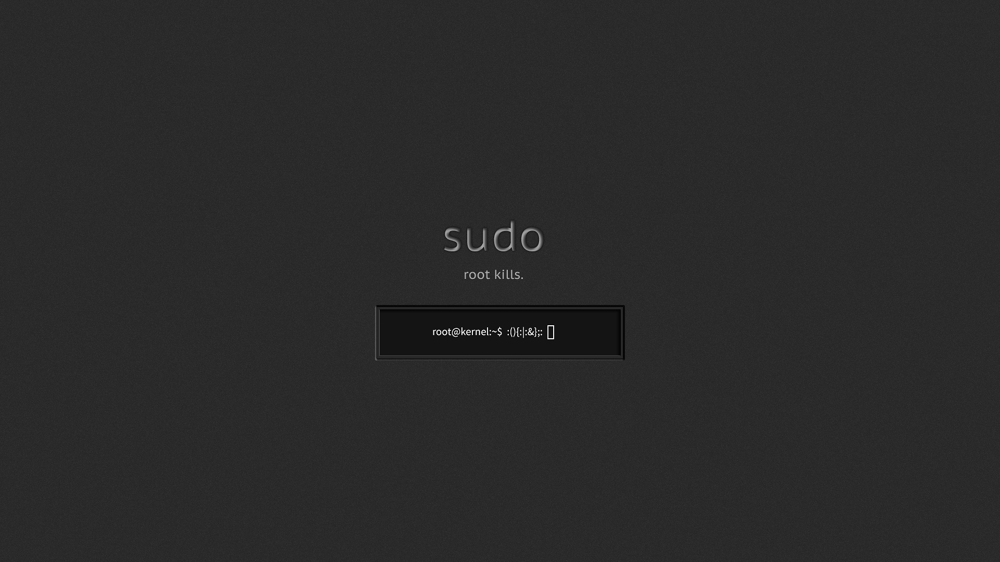

La création de Linux
En août 1991, un étudiant en informatique de 20 ans nommé Linus Torvald pense à créer un système d’exploitation libre,
il fait donc une annonce sur internet disant qu’il a pour passe-temps de créer ce système d’exploitation
mais que ce n’est pas très poussé et cela ne tournera sûrement que sur ses disques durs.
Le noyau Linux

Le projet d’un système d’exploitation open source a très vite attiré des développeurs du monde entier qui voulaient contribuer au code.
Linus a baptisé le nom du noyau de son système d’exploitation : "Linux" et a pour mascotte un manchot.
Il a choisi pour son noyau une licence spécifique (gpl) qui va permettre à tout utilisateur de :
Utiliser le logiciel comme on le souhaite
Modifier le logiciel pour l’adapter à ses propres besoins
Partager le logiciel à n'importe qui
Distribuer le logiciel avec ses propres modifications.
Qu'est-ce que Linux ajourd'hui ?
A partir du noyau Linux, beaucoup d’autres systèmes d'exploitation sont nés comme :
et depuis quatre ans, Microsoft a importé le noyau Linux à son systeme d’exploitation windows 10.
Le noyau Linux a aussi apporté des modifications dans les serveurs : amazon, facebook, twitter tournent sous linux.
Linux permet 75% des transactions boursières dans le monde.
Linux est présent dans votre téléphone android, distributeurs d'argent ou encore votre montre connectée.
En bref, Linux est aujourd'hui présent dans beaucoups d'appareils connectés.
Pour plus diformations :
L'histoire de Linux en vidéo
Wikipedia linux